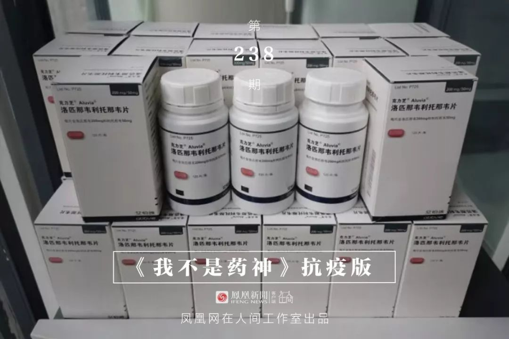
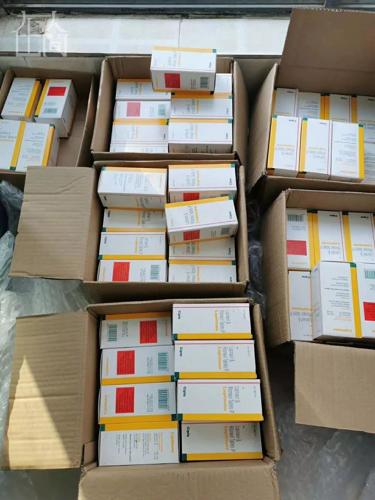

气溶胶传播说法不一，新冠病毒感染率可能为 1%，以及其他 35 条疫情新闻
原文链接 备份链接 根据丁香医生实时数据，截至 2020 年 2 月 9 日 18 时，全国累计确诊病例 37286 例，疑似病例 28942 例，新增确诊病例 2692 例，新增疑似病例 3916 例。其中，重症病例 6188 例，死亡 …


凤凰新闻客户端 凤凰网在人间工作室出品
1月28日下午两点，一位在武汉隔离病房的母亲刚刚吸出一些母乳。她有两个孩子，小的还在哺乳期。这是向松鼠哥求助的200多名新冠肺炎感染者之一。
松鼠哥是一名HIV感染者。1月28日，他发布微博，称可以向确诊的新冠肺炎患者免费提供克力芝，药品主要来自国内HIV感染者的捐赠。
5天前，1月23日，曾感染新型冠状病毒的国家卫健委专家组成员、北京大学第一医院呼吸和危重症医学科主任王广发表示，一种名为“洛匹那韦利托那韦片”的药物对他个人来说是有效的。
这种“洛匹那韦利托那韦片”药物就是克力芝，一种用于抗艾滋病毒的药物。《新型冠状病毒感染的肺炎诊疗方案》提出，可试用但应谨慎使用。
一时间，求助的患者陆续赶来。
“你好，请提供相关凭证。”这是松鼠哥和求助者在微信上的开场白。
隔离病房里的母亲传过来所在房间照片、刚吸出的母乳照，还有写着“病毒性肺炎”的医疗诊断证明，“可以救助我吗？”
虽然没有做核酸检测，但通过CT，她知道自己“中了”。“试剂盒有限，这里住的都是新冠病毒感染患者”。她所在的医院位于武汉市江汉区。江汉区是疫区中心，华南海鲜市场所在地。
核对好地址后，松鼠哥给她快递了一份药，并叮嘱，“不要挤奶给小孩喝，乳汁很可能传播病毒。”
但其实，这碗奶不会喂给她那嗷嗷待哺的孩子。她只是每天隔几个小时吸一次奶，扔掉，再吸。她希望自己有机会活下来，治愈之后可以接着母乳喂养孩子。

克力芝是用于治疗HIV的蛋白酶抑制剂，包括“洛匹那韦”（lopinavir）和“利托那韦”（ritonavir）两种主要成分。这两种成分，也出现在《新型冠状病毒感染的肺炎诊疗方案》的一般治疗方案中。试行第五版中注明：需注意洛匹那韦/利托那韦的不良反应。
松鼠哥知道，私自将处方药送给新冠肺炎患者要承担很大风险。然而，一方面，医院接受外来药品是违规的，另一方面，医生直接递交药品给患者也是违规的。
目前，想要高效快速、合理合法地把药送到有需求的患者手中，只有一个办法，就是患者直接赠与患者。松鼠哥说，这个活动只能依靠民间发起，而这两个患者群体的“中间人”，他可以来做。
最初的求助人，大约四分之一都是被感染的医护人员。普通患者，每人只能领一份药，但对于医务人员，松鼠哥最多提供两份药，这样他们可以匀给其他被感染的同事。服用克力芝后，会有肠胃和肝脏副作用，松鼠哥会提醒求助人，“不要给穿着防护服的医生吃，会不方便，先给在病床上的医生。”
面对求助人，松鼠哥一直很干脆，“地址、凭证给我，避免恐慌性的描述”，太多的交流对他来说是一种心理负担。
一位父母离异的女孩为她的母亲求药，“我妈妈有精神障碍，同时患上病毒性肺炎，现在医院”。女孩的消息让松鼠哥想起了自己的父亲，父亲也是因为类似的精神疾病去世的。于是他从为家人准备的药里拿出了一人份，送给这位女孩。
在有些人看来，来找松鼠哥的人有些病急乱投医，“不考虑副作用吗？克力芝副作用还是挺大的”；也有人反驳“副作用和活命，你选哪个？”
事实上，那些前来求助的新冠肺炎患者，大部分都走投无路，更重要的是，“听说有用”。
用松鼠哥的话说，“如果抗病毒药是后宫的话，克力芝应该就是《延禧攻略》里的娴妃吧，资历最老，一直不温不火，也不受宠的一个妃子，突然一下子逆袭当上皇后了。”
两天时间，国内HIV感染者捐出的约60瓶克力芝派发殆尽。面对迫切的需求，松鼠哥和朋友自费从印度三次购买克力芝，大都还在路上。求药的人依旧络绎不绝，松鼠哥只能先给他们排号。

“HIV患者，吃药八年”，这是松鼠哥的微博简介。在他的微博里，出现最多的是药物科普，偶尔也有关于个人生活的记录和感悟。
2017年，他为HIV感染者做了一个网络借药平台。虽说是平台，其实就是他自己，像松鼠屯坚果一样屯药，再帮助他人。
借药平台起初是为HIV感染者提供帮助。一方面，HIV感染者可从当地疾控部门或定点治疗医院免费领取克力芝，但由于各种原因，有的HIV感染者没能及时去领药，另一方面，服用克立芝可能出现高血脂症、腹泻等副作用，并不受病友青睐，有的人干脆换成其他自费药，这些人手中就有了闲置的克力芝。松鼠哥通过微博，将这些闲置的克力芝聚集起来。那些没能及时去机构领药的病友就可以向松鼠哥的平台求助。
在参考新冠肺炎治疗手册及一些服用反馈后，松鼠哥决定将面向HIV感染者的借药平台开放给新冠肺炎患者。尽管他知道这么做有很大的风险：克力芝是处方药，需要在医嘱下服用，患者出事了可能会找他麻烦。
对于求药者和捐药者，松鼠哥都要进行筛选。新冠肺炎感染者必须提供与肺炎相关的医疗凭证，而对于捐药的HIV感染者，考虑到有些人免疫力较低，为防感染新冠病毒，松鼠哥也会叫他们留下一盒以备不时之需。
松鼠哥在河南郑州，求助者来自全国各地。对于武汉的新冠病毒感染者，他一开始是通过快递送药；后来，在别人的帮助下，他先把药品快递给武汉城内的视频博主“蜘蛛哥”，“蜘蛛哥”再开车一一送去。
在疫情发生之前，松鼠哥一边工作，一边做借药平台的公益，可能一个月只有一两个人来借药，很轻松。但武汉封城后，湖北很多二级县市也封了，有些无法回城领药且因为隐私问题不愿向所在地疾控部门寻求帮助的HIV感染者也向松鼠哥求助。“我的生活作息被打乱了，几乎没有时间睡觉。当时可能一天要发20、30个包裹，很忙很忙。”
国内药物不够时他也没有公开募捐，只是和好友集资从印度买药，“因为这是效率最高的做法，犹豫是一种将我们和目标拉得越来越远的力量”。
2 月 4 日，李兰娟院士团队公布最新研究成果：根据初步测试，阿比朵尔、达芦那韦能有效抑制冠状病毒，抗艾滋病药物克力芝对治疗新型冠状病毒感染的肺炎效果不佳，且有毒副作用。她建议将阿比朵尔、达芦那韦两种药物列入国家卫健委《新型冠状病毒感染的肺炎诊疗方案(试行第六版)》。
在《新型冠状病毒感染的肺炎诊疗方案》试行第三、四、五版中，都出现了“洛匹那韦/利托那韦”，即克力芝。松鼠哥一直很担心在第六版的指南中，克力芝会被剔除。他虽然不太清楚阿比朵尔，但是知道“达芦那韦的储量是非常少的，目前国内版本的商品名叫普泽力，是达芦那韦和考比司他的组合片剂，国内零售价是一盒1500元，吃的人非常非常少。”

■ 2月9日到达郑州的100盒印度版克力芝。
他和朋友自费从印度购买了428盒克力芝，“如果后面第六版指南将克力芝剔除了，我这个活动就会立刻终止，不论我们救助到第几位患者，我们就会立刻打住，不会再提供。在第六版没有出来之前，我们还会继续进行。”
松鼠哥算过了，按照第五版治疗指南，一个人吃14天、一天两次、一次两粒，国内原厂abbvie的克力芝一瓶可供两名新冠患者，印度版一瓶只可以供应一人。
截至2月6日，来找松鼠哥的患者已经排到了约100号。也是这天，松鼠哥得知一批药品滞留海关，需要提供药品进口许可证才能放行。他想要拿到这批药，必须先去找受捐单位（医院），拿着医院开出的接收材料，去找药监局开药品进口许可证交给海关。
当天晚上18时43分，开车去药监局之前，松鼠哥在朋友圈向正在排号的求助人说明情况，告诉大家他已托朋友联系武汉的医院。但这批药品能否顺利抵达武汉仍是未知数。他将微博的签名改成了：“各位别再找我要克力芝了”。
2月8日，一个叫做“希望小组”的民间组织，帮松鼠哥从香港人肉背回100盒印度版克力芝，这100盒已于9日中午抵达郑州。此外，该小组也帮松鼠哥的另外328盒克力芝找到了接受捐赠的医院。随即，松鼠哥的微博签名也改成了“新冠病人救助”并注明了自己的联系方式。

无论是HIV感染者还是新冠肺炎患者，都有人将松鼠哥称作“药神”。对他来说，救人固然是第一目的，但也有自己的私心——“我对药有感情，我不想他们被闲置、被浪费”。
他说，药是能救命的，送药给新冠患者，是迫切的。他认为“现在最需要这个药的是新型冠状病毒肺炎感染者，非吃克力芝不可的HIV感染者比例很小”。
吃药八年的松鼠哥，在头三年吃的都是克力芝，后来自费换了其他的药物。他说，“长期服用克力芝确实对肠胃、肝脏有影响，但都没有严重到不可承受的程度，而且伤害并非不可逆”。
“无论是HIV还是新型冠状病毒，初期的感染者都容易将它想成绝症，从而在恐慌中做出错误的判断。”松鼠哥说，除了坚定的求生信念，科学的信息对于患者来说非常重要。“我不提供心理援助服务，但是我希望给大家做HIV的科普。有了更客观的认识，心里就不会有那么多想法”。
从害怕到接受，他真切地思考过死亡和生活。在面对这次新型冠状病毒肺炎蔓延时，松鼠哥反而没有这么害怕，“我有坚定的求生意识，也没有那么怕死”。HIV让他学会自救。当卫健委的治疗指南中出现洛匹那韦/利托那韦时，松鼠哥就开始为自己的家人准备克力芝和其他药物以备不测。
八年前，大学毕业，夏末入秋时，松鼠哥查出感染HIV。那一年的秋冬自然是寒冷的，惨淡的心情就像斯巴达克斯在大战前的薄雾中遥望着罗马大军摆阵，完全是等待。
在成为HIV感染者之初，松鼠哥曾认为他永久地失去了追求自由的机会，三个月领一次药的制度，让他只能在同一个城市循规蹈矩地生活；但同时他也学会了放下追求完满的执念，经历过这些，“我不会再追求十全十美”。
现在的松鼠哥认为自己是幸福的，他很感激自己目前拥有的事业，以及不离不弃的男友；感激自己有一个开明的妈妈，一个会毫不嫌弃地把他吃剩的半碗饭吃掉的阿叔。家里人都“心照不宣”地知道他的感染。
药物帮他的身体恢复正常，HIV也并不会让他失去自己的生活。“我比以前的我快乐，而且，我相信经常健身的自己比很多同龄人更健康”。
“我做HIV感染者志愿工作将近有三年，做借药平台有两年，接触过很多HIV感染者。这个群体是非常丰富的，包含各种各样的职业、年龄段和收入层次，每个人都有自己生活的悲喜，和波澜壮阔的内心世界。”
在HIV的互助群里有人开玩笑问松鼠哥，“如果可以选，HIV和新冠你选哪个？”
“HIV跟了我八年，都有感情了，不选它会吃醋的。”
在他看来，HIV是朋友，而新型冠状肺炎，是敌人。
声明提醒：卫健委专家组成员王广发早前称“克力芝”对他有效，《新型冠状病毒感染的肺炎诊疗方案》（试行第三、四、五版）的一般治疗方案中将该药列入。需要注意的是，包括钟南山在内的医学专家都指出，该新型冠状病毒目前无有效的针对性药物。试行第五版中注明：需注意洛匹那韦/利托那韦的不良反应。一定要谨慎使用。


新型肺炎疫情牵动人心，
《在人间》现面向全国网友征稿：
(一) 疫区影像日记
如果你身处疫区
请你用照片（视频）和文字记录
你所听闻和见到的一切
照片不少于3张
文字不少于300字
投稿方式：微信联系人间君（zairenjianliving）
（二）抗击疫情真实故事
无论你是一线医护人员、志愿者、
确诊或疑似患者及家属、已治愈出院人士等等，
如果希望讲述疫情相关经历，
请微信联系人间君（zairenjianliving）

原文链接 备份链接 根据丁香医生实时数据，截至 2020 年 2 月 9 日 18 时，全国累计确诊病例 37286 例，疑似病例 28942 例，新增确诊病例 2692 例，新增疑似病例 3916 例。其中，重症病例 6188 例，死亡 …
原文链接 备份链接 记者/ 魏晓涵 梁婷 韩谦 佟晓宇 实习记者/ 陈威敬 胡琪琛 编辑/杨宝璐 宋建华 医护人员严阵以待 摄影/高瞾 2019年12月30日，武汉市卫计委内部文件流出，称“武汉出现不明原因的肺炎”，与华南海鲜批发市场有 …
原文链接 备份链接 随州市中心医院肿瘤科科长称，“现在肿瘤科的医疗全部都停了，我们科也开始做一线防控，人太少，没办法。” 全文1030字，阅读约需2分钟 随州癌症患者家属反映，随州及武汉多家医院肿瘤科室因疫情被改造，患者化疗被耽误。 …
原文链接 备份链接 【财新网】（记者 丁捷 综合）大批从事重症医学的医护人员奔赴一线。据国家卫健委，截至2月7日，建立了16个省份支援武汉以外地市的一一对口支援关系，以一省份包一市的方式，全力支持湖北省加强病人的救治工作。驰援武汉的医护 …
原文链接 备份链接 【财新网】（记者 宿慧娴 黄蕙昭）武汉大学中南医院最新论文显示，新冠抗疫过程中，院内感染应高度警惕。该院从1月1日至1月28日收治的138名新冠肺炎确诊患者中，约41.3%的患者属于院内感染，其中40人（29%）为医 …